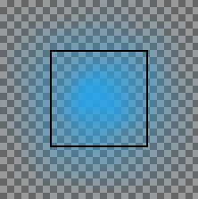

MyPaint é um programa de pintura gratuito que vem com muitos pincéis específicos. Libmypaint foi modificado em 2016 de forma a poder ser usado por outros programas. GIMP-2.10 pode usar esses pincéis.
Você pode encontrar muitas coleções de pincéis MyPaint pela Web, em formato comprimido, frequentemente em um arquivo .zip. Descompacte este arquivo em uma pasta temporária.
através do menu na janela de imagem → →
Ative a ferramenta como abaixo: você deve ter um ícone de pincel MyPaint na caixa de diálogo de opções da ferramenta. Clique neste ícone para exibir todos os pincéis MyPaint.
Existem várias formas para ativar a ferramenta:
-
Através do menu da janela de imagem: → → ,
-
Ícone da ferramenta de clonagem na caixa de ferramentas
-
Ao pressionar o atalho de teclado C.

Normally, tool options are displayed in a window attached under the Toolbox as soon as you activate a tool. If they are not, you can access them from the main menu through → → which opens the option window of the selected tool. The available tool options can also be accessed by double clicking the corresponding tool icon in the Toolbox.
As opções podem agir de forma um pouco diferente de acordo com o pincel MyPaint que você usar.
- Opacidade
-
Para definir a opacidade do pincel (0,0 - 100,0). A opacidade depende de uma base: veja abaixo.
- Pincel
-
O ícone do pincel ativo é exibido. Se você clicar nele, a lista de pincéis MyPaint é exibida e você pode selecionar outro pincel
Na barra inferior da caixa de diálogo, você tem botões para ícones menores ou maiores, e visualização como lista ou grade.
- Radial
-
Para definir o raio do pincel.
- Opacidade do pincel
-
Estes valores (0,00 - 2,00) são fatores multiplicativos: se, por exemplo, você definir esta opção para 0,50, a opacidade máxima se torna 100 * 0,50 = 50, embora ainda seja 100,0 na opção Opacidade.
Tabela 14.3. Exemplo de pintura
Opacidade do pincel
Opacidade 100 50 25 1.00 =100

=50
=25
0.50 =50
=25

=12.5
2.00 =100
=100
=50
A opacidade base pode exceder 1,00 até 2,00. Claro, a opacidade não pode exceder 100. No exemplo, você pode ver que uma opção de opacidade acima de 50 (100 * 2,00 = 200) é na verdade uma opacidade em 100, e 25 * 200 = 50 é equivalente a 50 * 1,00 = 50. Mas essa possibilidade é útil quando seu pincel Mypaint tem uma opacidade padrão menor que 100.
- Dureza
-
Quanto mais firme o pincel, mais nítido o pincel. Quando você reduz a firmeza, o pincel Mypaint pode não funcionar se o tamanho do pincel for muito pequeno.
- Gain
-
This setting changes the pressure gain of pressing down on the canvas with a brush.
If you are using a tablet, then you can adjust this setting to make your brush strokes softer or harder. If you are using a mouse, then you can simulate the effects of pressure when painting.
- Pincelada suave
-
Se esta opção estiver marcada, os traços ficam mais suaves. Duas opções estão disponíveis:
-
Rodinha: O tamanho do pincel depende da posição da rodinha.
-
Rodinha: O tamanho do pincel depende da posição da rodinha.
-
- Apagar com este pincel
-
Se esta opção estiver marcada, o pincel funciona como borracha. Como na ferramenta Borracha, as áreas apagadas são transparentes se houver um canal alfa, têm a cor de fundo se não houver canal alfa.
- Sem efeito de apagamento
-
If this option is checked, the brush will not decrease the alpha of pixels. For example, if you blur an edge between opaque and transparent pixels, the alpha of the transparent pixels will increase but the alpha of the opaque pixels will not decrease.
Figura 14.70. Um exemplo de "Sem apagamento" do programador

Sem efeito de apagamento

Sem efeito de apagamento
- Expand Layers
- Veja Opções em comum das ferramentas de pintura para uma descrição das opções da ferramenta que são aplicáveis a todas as ferramentas de pintura.